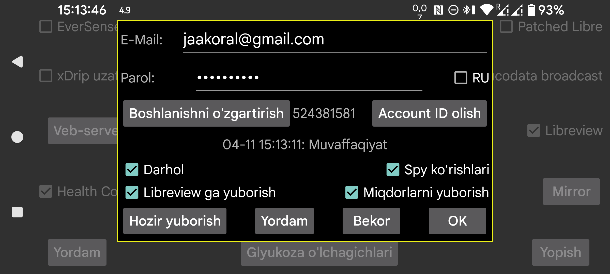

Juggluco glyukoza ma’lumotlari va miqdorlarni Libreview’ga yubora oladi.
LibreLink ilovasi kabi, Juggluco ham Libreview’ga oxirgi 89 kunlik ma’lumotni yuboradi.
Bu xizmatdan foydalanish uchun https://libreview.com da Libreview hisobi yarating va shu yerga e‑mail manzili hamda parolini kiriting.
Bir xil davrdagi ma’lumotni bir Libreview hisobiga bir necha marta yubormang, masalan LibreLink va Juggluco ikkalasidan ham. Aks holda dublikat qurilmalar paydo bo‘lishi mumkin. Libreview da Account Sozlamalar→My devices bo‘limidan eski qurilmalarni o‘chirish yoki yangi Libreview hisobidan foydalanish mumkin.
Funktsiyani yoqish uchun Libreview’ga yuborish ni ham belgilash kerak.
Juggluco yangi ma’lumotni Libreview’ga, agar oxirgi 20 daqiqada yuborilmagan bo‘lsa, siz Juggluco dan chiqayotgan paytda yuboradi. Hozir yuborish tugmasi bilan ham qo‘lda yuborish mumkin.
Glyukoza qiymatlaridan tashqari miqdorlar ham Libreview’ga yuborilishi mumkin. Buning uchun Miqdorlarni yuborish ni bosib, har bir yorliq nimani anglatishini ko‘rsatish kerak.
RU: agar siz https://libreview.ru dan foydalanayotgan bo‘lsangiz, shu parametrni yoqing. Bu faqat Libre 2 sensorlariga tegishli. Libre 3 sensorlari faqat libreview.com bilan ishlaydi, chunki Abbott’ning ruscha Libre 3 ilovasi yo‘q.
Darhol: Libre 2 yoki Libre 3 sensorlaridan kelgan glyukoza qiymatlari kelishi bilanoq Libreview’ga yuboriladi. Bu asosan LibreLinkUp bilan birga foydali. Buning uchun Abbott’ning Libre ilovalaridan birida shu Libreview hisobiga LibreLinkUp ulanishini qo‘shish kerak. Agar mamlakatingizda Abbott Libre ilovasi bo‘lmasa, patched Libre 3 ilovasidan foydalanish mumkin.
Ba’zan qiymat darhol ko‘rinmaydi, chunki LibreLinkUp ko‘rinishi avtomatik qayta chizilmaydi. LibreLinkUp dan foydalanishda ehtiyot bo‘lish kerak: grafik ustiga bossangiz joriy emas, eski qiymat ko‘rsatilishi mumkin.
Spy ko‘rishlari: bu parametr yoqilgan bo‘lsa, Juggluco Libreview’ga qiymat ko‘rilganmi-yo‘qmi, shu ma’lumotni ham yuboradi. O‘chirilgan bo‘lsa, u doim “ko‘rilmagan” deb yuboradi. Bu ma’lumot ayniqsa Darhol ham yoqilgan bo‘lsa ishonchli yuboriladi. Libre 3 dagi barcha ko‘rishlarni ushlash uchun Juggluco doim internetga ulangan bo‘lishi kerak; Libre 2 esa ilova yopib yuborilmaguncha ko‘rishlarni eslab qoladi.
Boshlanishni o‘zgartirish: ma’lum sana va vaqtdan boshlab ma’lumotni qayta yuborishni yangidan boshlaydi. Yangi Libreview hisobiga o‘tganda buni bosish kerak bo‘ladi.
Libreview’ga yuborishning oxirgi urinish natijasi Account ID olish tugmasi ostida ko‘rsatiladi.
Libreview tahlil uchun tarix qiymatlaridan foydalanadi, Juggluco esa statistika ekranida oqim qiymatlaridan foydalanadi. Shu sababli Libreview va Juggluco statistikasi orasida kichik farqlar bo‘lishi mumkin: Juggluco odatda bir oz “salbiyroq” ko‘rinadi — time in range pastroq, o‘zgaruvchanlik kattaroq. Sensor faol bo‘lgan vaqt ham Juggluco bo‘yicha kichikroq bo‘lishi mumkin, chunki u yo‘qolgan har bir oqim qiymatini hisoblaydi.
Juggluco bir vaqtning o‘zida bir nechta sensor bilan ishlay oladi, LibreLink esa odatda bitta sensor bilan. Juggluco ham Libreview’ga bir vaqtda faqat bitta sensor ma’lumotini yuboradi: avval bir sensor ma’lumotlarini yuboradi, o‘sha sensorda ma’lumot tugagach keyingisiga o‘tadi. Keyingi sensorga o‘tilgach, oldingi sensorga qaytmaydi. Shuning uchun bir nechta sensor parallel ishlatilsa va keyinroq qo‘shilgan sensor avvalroq tugasa, avvalroq qo‘shilgan sensor Libreview’ga boshqa ma’lumot yubormasligi mumkin.
Account ID olish: agar sizga faqat LibreView account ID kerak bo‘lsa va ma’lumot yuborishni istamasangiz, e‑mail va parolni kiriting hamda Account ID olish tugmasini bosing. Tugma oldidagi qatorda Account ID ko‘rsatiladi; bu biroz vaqt olishi mumkin va ekran avtomatik yangilanmaydi. Account ID ni LibreView serveridan olish, Abbott’ning Libre 3 ilovasi bilan allaqachon ishlatilgan FreeStyle Libre 3 sensorini shu LibreView hisobi bilan Juggluco da ishlatish imkonini beradi.
Libreview Account ID raqamini Libreview hisobotlari manzil satrida ko‘rinadigan UUID dan ham aylantirib olib, Juggluco ga qo‘lda kiritish mumkin.
Sibionics va Dexcom sensorlaridan kelgan ma’lumot Libreview’ga yuborilmaydi.
Agar ma’lumotni Libreview formatida saqlamoqchi bo‘lsangiz, buni chap o‘rta menyu→Eksport yoki Juggluco dagi veb server orqali ham qilishingiz mumkin. Bu holda Dexcom va Sibionics glyukoza qiymatlari ham kiritiladi.